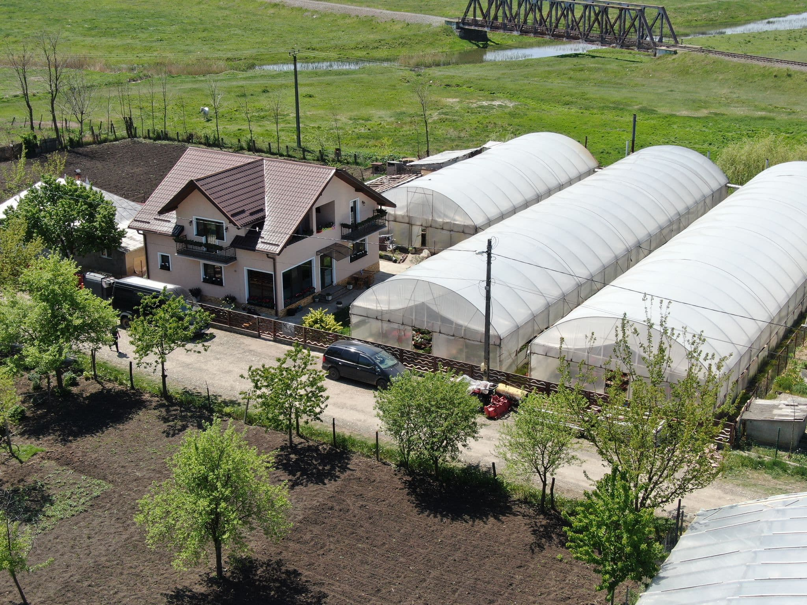

Serele Saveni
Oferim atat revanzatorilor cat si celor care se ocupa de amenajari
peisagiste o gama variata de flori pe tot parcursul anului, in
functie de anotimp:plante de bordura,plante curgatoare,plante
pentru gradina,parcuri, terase si balcoane,toate produse de noi in
serele noastre. Va asteptam la noi pentru a va alege plantele
dorite.
Saveni-Botosani